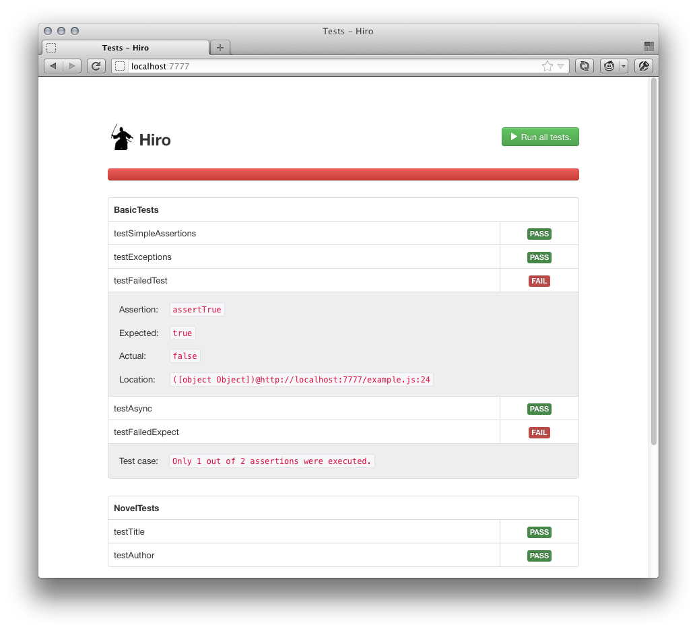

Hiro is a small yet powerful testing framework designed with third-party JavaScript applications in mind. It runs each test suite in a separate iframe sandbox, preventing global state leaks and conflicts.

Hiro's usage pattern resembles patterns used by similar frameworks in other languages such as Python (PyUnit) and Java (JUnit). You create test suites, load fixtures, write test cases and so on. Let's start with the test suites.
Test suites, in Hiro, are created using the hiro.module method. The
method accepts two parameters: name of the suite and its implementation
in form of a JavaScript object:
hiro.module("MySuite", {
setUp: function () {},
testFeatureA: function (test) {},
testFeatureB: function (test) {}
});
The example above should be pretty self-explanatory. You created a simple
test suite that defines one special method, setUp, and two test cases:
testFeatureA and testFeatureB. Hiro supports three types of properties
for its test suites: control properties, test cases and everything else.
Control properties are hooks and helpers that you can use to configure the
suite's behavior. Test cases are, well, test cases--the basic building
blocks of unit testing. All other properties and methods are ignored by
Hiro and can be used as helper functions.
Let's go over all control properties that are available today.
This is a hook method which Hiro will automatically call when you run a test suite.
This is a hook method which Hiro will use to check if your suite is ready
to be executed. If this method is defined, the suite will be paused and
Hiro will start calling waitFor continuously unti it returns a truthy
value (or until the timeout treshold is met). As soon as this happens,
Hiro will start executing test cases.
This is a hook method which Hiro will automatically call before each test
in a suite. If onTest returns an array, this array will later be passed
into each test as a list of formal parameters.
hiro.module("MySuite", {
onTest: function () {
// Pass sandboxed version of jQuery into each test
return [ this.window.jQuery ];
},
testExtend: function (test, jQuery) {
// ...
}
});
This is a special property that can be used to tell Hiro to mixin other suites into the current one. It accepts an array of strings, each string representing a name of a suite to mixin from.
hiro.module("MyMixinSuite", {
mixin: [ "MyParentSuite", "AnotherParentSuite" ]
});
When creating a suite instance, Hiro will copy all properties and methods
from MyParentSuite into your current suite. Then it will do the same with
AnotherParentSuite. And only then it will overwrite created methods
with those defined in your current suite (if any),.
All methods with names starting with test will be recognized as test cases.
Test cases are single scenarios that must be set up and checked for
correctness.
After you created your suite, you need to load a fixture and make sure that
your environment is initialized. To load a fixture you will use a special
method called loadFixture:
hiro.module("MySuite", {
setUp: function () {
this.loadFixture({ name: "mylib" });
}
});
Fixtures in Hiro is a simple HTML document that is injected into a newly
created iframe. To defined a fixture you will need to write document's
code into either textarea or script HTML element:
<textarea class="fixture" type="hiro/fixture" data-name"mylib">
<html>
<head>
<script src="mylib.js"></script>
</head>
</html>
</textarea>
<script type="hiro/fixture" data-name="anotherfixture">
<html>
<body>
...
</body>
</html>
</script>
You can also load a fixture by its URL. But keep in mind that due to Same-Origin Policy restrictions your fixture URL must be on the same domain, port and protocol as your Hiro installation:
hiro.module("MySuite", {
setUp: function () {
this.loadFixture({ url: "http://localhost/fixture.html" });
}
});
Now, once you created your fixture you need to tell Hiro to wait
until it's been completely loaded. To do so you can use waitFor:
hiro.module("MySuite", {
setUp: function () {
this.loadFixture({ name: "mylib" });
},
waitFor: function () {
// this.window refers to the Window object inside the iframe
return this.window && this.window.MyLib;
}
});
All the things we described so far are used to prepare the environment.
As we mentioned above, the basic building blocks of unit testings are
test cases. Each test case in Hiro, as well as the special hook method
onTest, has access to the sandboxed environment created for its suite.
Referencesto that environment—in form of window and document objects
are available from within test cases as instance properties (i.e.
properties ofthis`).
hiro.module("MySuite", {
testSomeMethod: function (test) {
// Here, 'window' refers to the environment where Hiro is loaded
// and 'this.window' refers to the sandboxes environment. Same
// with 'document' and 'this.document'.
test.assertTrue(window.hiro != null);
test.assertTrue(window.MyLib == null);
test.assertTrue(this.window.hiro == null);
test.assertTrue(this.window.MyLib != null);
}
});
You might have noticed that the first argument for every test method is
a variable named test. This is a special variable that contains useful
assertions and test helpers.
Specifies how many assertions are expected to run within a test.
Pauses the current test. This method is usually used before an async
function call. It also must be followed by a call to the resume()
method later in the code or your test will fail with a timeout error.
Resumes the current test.
A boolean assertion, checks that value is truthy.
A boolean assertion, checks that value is falsy.
A comparison assertion, checks that both values are strictly equal.
Assertion to test if func throws an exception. Accepts an optional
second parameter, an exception object, to test for a specific
exception.
Same as test.assertTrue(val === undefined).
Same as test.assertTrue(val === null).
Checks that key is an existing and not inherited property of obj.
Checks that el is a part of an array arr.
And this is how you use Hiro. If you are still confused check out our demo.
Source code is available on GitHub: valueof/hiro. Feel free to fork it, report bugs, submit patches, etc.